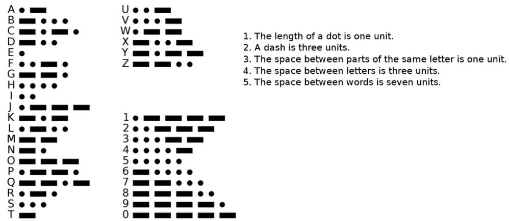
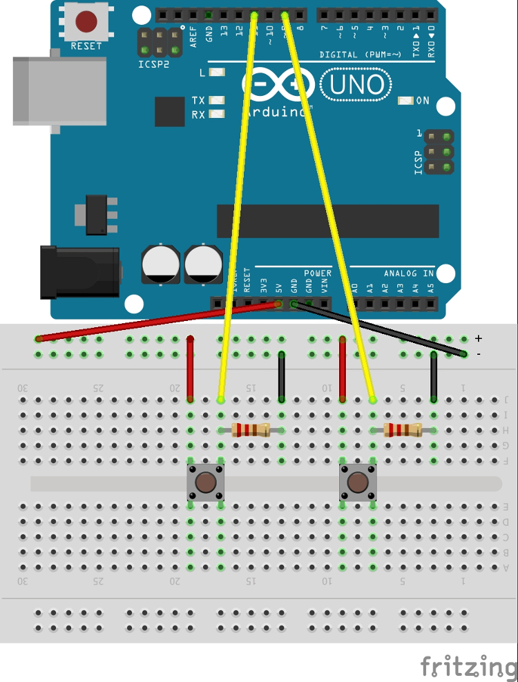

Extra Challenges
1d Morse Code
Write code that connects different key press events to those keys' morse code - as blinked by the built-in or external LEDs.

1e Panda Joystick
Wire two(2) separate push-buttons each to its own digital I/O pin.
Make Panda move Left when pushing Button 1, and move Right when Pushing Button 2.
Here is an example of how to wire up two(2) separate buttons - once you need to connect 5V and Gnd to multiple parts of your circuit you should use to +/- bus on the breadboard.

1f LED Toggle Switch
For this challenge you need to connect an LED and a Button input to the Arduino.
Make the LED toggle between on and off when the button is pressed - LED stays on when toggled on, even after you release button...
Hints: You will need to save the state of the LED in a variable, then check the state each time you press the button, and change state - use the state to determine what to do about the LED pin.
Here is how you'd connect a button and LED: